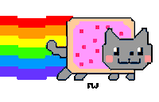
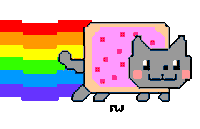
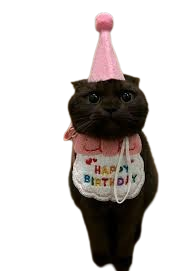

Happy birthday!!
Feliz cumple, cabeza de pan 🎉🐱
Preparé una pequeña locura web para ti… solo porque los gatos son geniales y tú también 😏💛 Que hoy tengas un día tan divertido y raro como tú quieras.
Preparé una pequeña locura web para ti… solo porque los gatos son geniales y tú también 😏💛 Que hoy tengas un día tan divertido y raro como tú quieras.